1:1 procedural model · Blender bpy · dimensionally verified
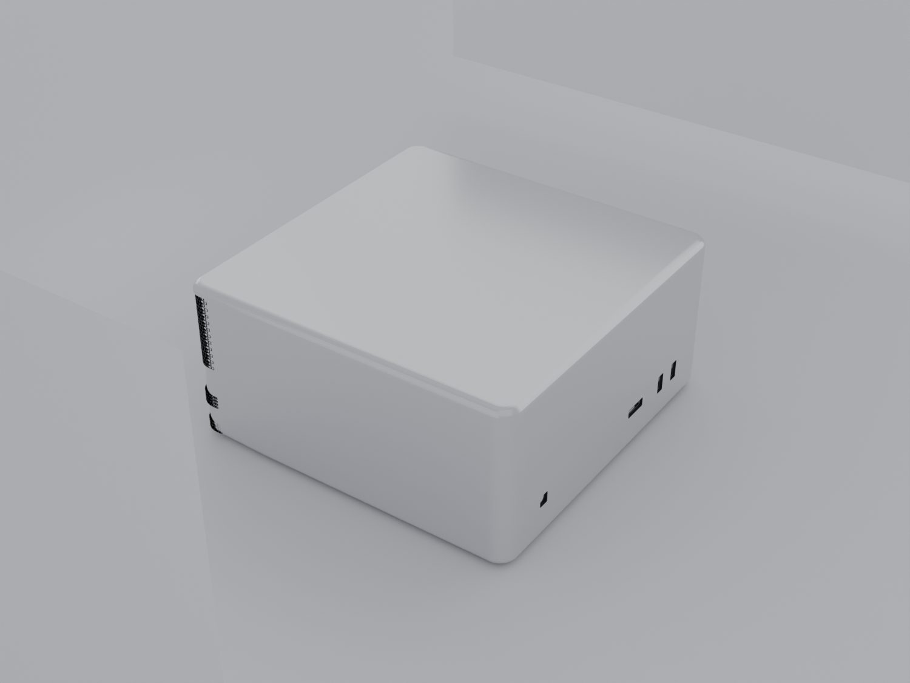
Measured from the evaluated mesh with every modifier applied, against Apple's published tech specs. Not eyeballed — the build script prints these numbers and exits non-zero if any axis drifts past 0.5 mm.
| Axis | Official | Model | Δ |
|---|---|---|---|
| Width (X) | 19.70 cm 7.7 in | 19.7000 cm | +0.000 mm |
| Depth (Y) | 19.70 cm 7.7 in | 19.7000 cm | +0.000 mm |
| Height (Z) | 9.50 cm 3.7 in | 9.5000 cm | +0.000 mm |
Height is the full 3.7 in including the rubber feet: the shell is 9.30 cm and the feet add 0.20 cm. Source: apple.com/mac-studio/specs, “Size and Weight” section.
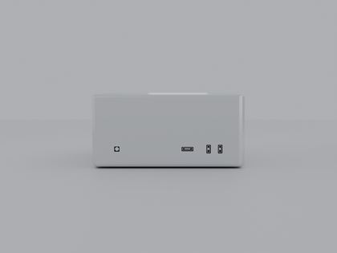
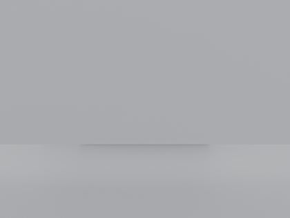
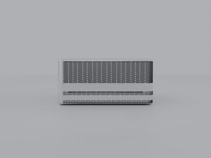
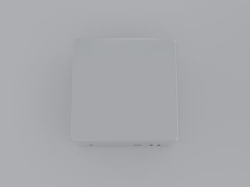
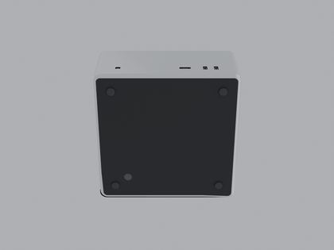
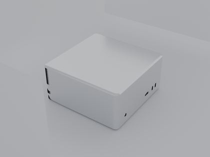
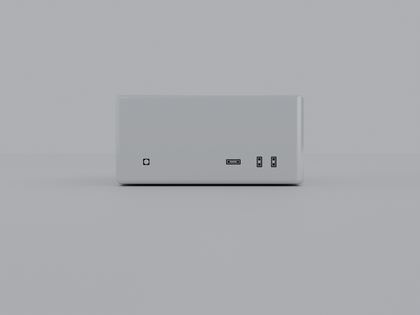
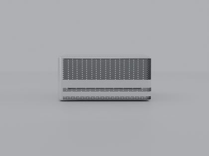
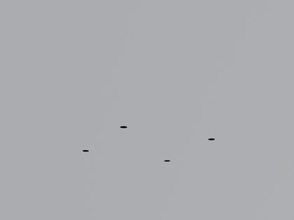
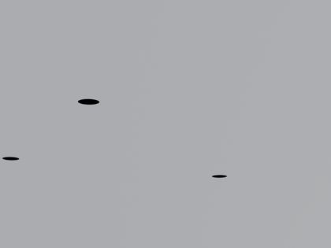
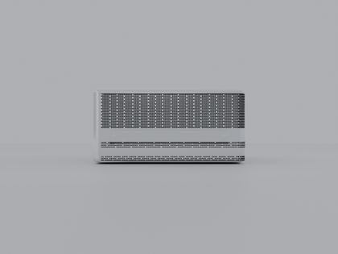
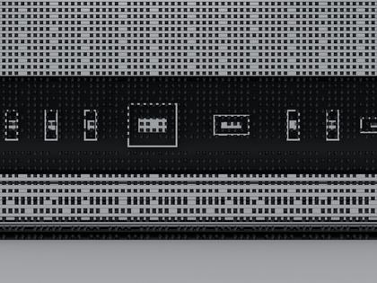
Cycles, 1500×1125, 128 samples, four-light studio setup with a gradient environment and bounce cards. Perforations are on the rear panel only — the front, both sides and the underside are plain aluminium.
Matched against Apple's own product photography, not from memory.
Anodised silver aluminium, 1.05 cm vertical corner radius, 0.48 cm top/bottom edge break, corners tessellated at 20 segments so the arc reads machined rather than faceted. Single-piece block — the top is one continuous surface, not a lid in a tray.
Smooth and uninterrupted above the base band. Two vertical USB-C ports and a horizontal SDXC slot low on the left, a 3.5 mm jack low on the right. Positions are measured off Apple's own front hardware diagram: 16.5%, 24.0%, 37.7% and 83.5% of the panel width. There is no front status light — Touch ID is on the underside. Every opening is a real boolean recess with a socket built wall-by-wall: bright metal walls, shadowed back plate, contact tongue.
A shallow 0.18 cm connector bay in solid aluminium, holding left to right: 4× USB-C (10 Gbps), 10Gb Ethernet (RJ-45), power inlet, 2× Thunderbolt 5, HDMI, 3.5 mm headphone jack and the Touch ID button. Above and below the bay are two perforated fields.
Three separate fields on the rear panel, each real geometry — one quad ring per hole, no texture. Measured against Apple's rear diagram, from the top of the 9.5 cm height: a perforated field 5–55%, the solid port band 55–70%, a second field 70–80%, a solid transition 80–90%, and the base band 90–100%. The hole lattice is square at a 2 mm pitch with a 1.42 mm radius, which opens 39.6% of the surface.
Every field is confined to the back. The front panel, both side panels and the underside are plain aluminium from edge to edge — the field mask is keyed on each point's position on the outline, and both the recess in the body loft and the hole placement call it, so they cannot drift apart and leave the holes buried in solid metal.
Four rubber feet and the Touch ID power button, on an otherwise plain aluminium plate.
Every dimension, port position and ventilation boundary here
is measured from Apple's own hardware diagrams, not estimated. The
blender/ortho_compare.py and tools/face_diff.py pair
renders the six faces orthographically and diffs them against those
diagrams band by band; the worst zone deviation on the rear is 5.2 of 100
points.
# geometry + .blend + bbox report
blender --background --python blender/build_mac_studio.py
# 12 views (arg 1 = output dir, arg 2 = samples)
blender --background --python blender/render_views.py -- renders 128
# dimension check -> VERIFY_OK / VERIFY_FAIL
blender --background --python blender/verify.py
# port layout, bay material, front positions -> PORTS_OK / PORTS_FAIL
blender --background --python blender/verify_ports.py
# six dead-on orthographic faces, for pixel-diffing
blender --background --python blender/ortho_compare.py
# diff a face against Apple's diagram -> per-zone and per-band deltas
python3 tools/face_diff.py renders/ortho/rear.png reference/hk/hw_back.jpg rearCamera distance is derived from the model's bounding sphere and the lens FOV, so re-framing survives geometry edits — no hand-tuned distance constants. The orthographic pass exists because the perspective rig's auto-framing reported this machine at h/w 0.75 instead of 0.48, which invalidated every band measurement taken from it.
Each one produced a plausible-looking wrong result rather than an error.
data.loop_triangles is a lazily-filled cache and is not a valid
“already triangulated” test.
shade_auto_smooth (4.2+) / shade_smooth_by_angle
(4.1); mesh.use_auto_smooth is gone.
Clearcoat→Coat Weight,
Transmission→Transmission Weight.
rows evenly across a band and calling it a day drifts the row
pitch away from the column pitch; the field then measures 40%, 27%, 40%,
27% in consecutive bands purely from where each band falls against the
lattice. A pixel diff is what surfaced it — the render looked fine.
Cube.001 or Cylinder.004,
so the viewer's /Grille/ and /^Port_/
categorisation matched nothing and the per-part toggles did nothing. Copy
the object name onto the mesh data before export.
py-keyed mask lights up
the sides and leaves the back bare. Arc length does separate them, but only
if the arc is rescaled from the inset profile the holes are laid along onto
the reference outline — and half a centimetre of error slides the field onto
the side panels. Asking "is this point on the rear panel?" directly, from
px/py and the corner radius, is the version that
has not moved in three attempts.